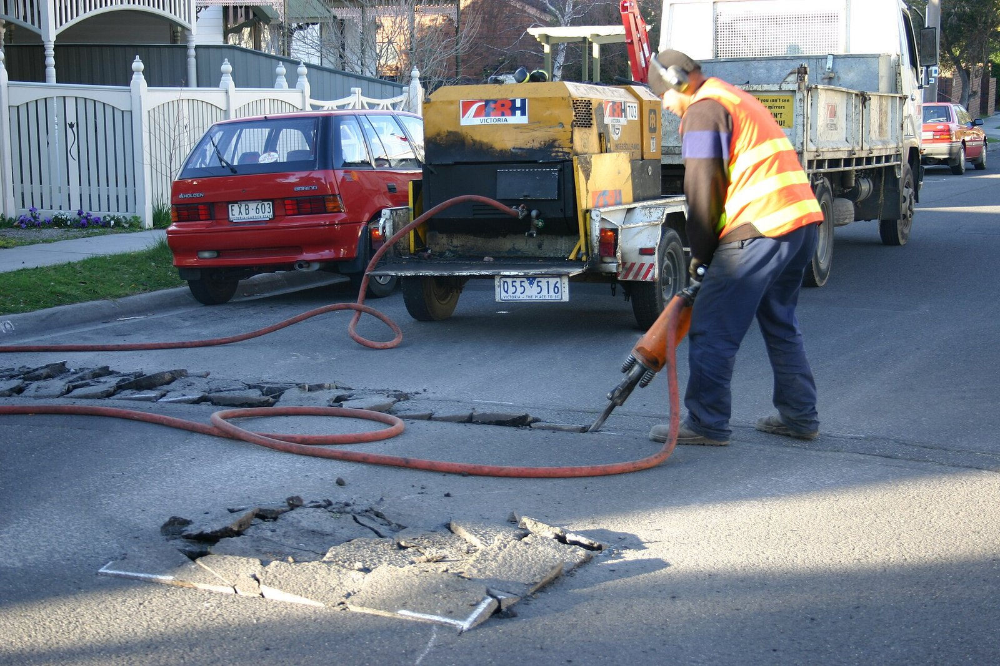
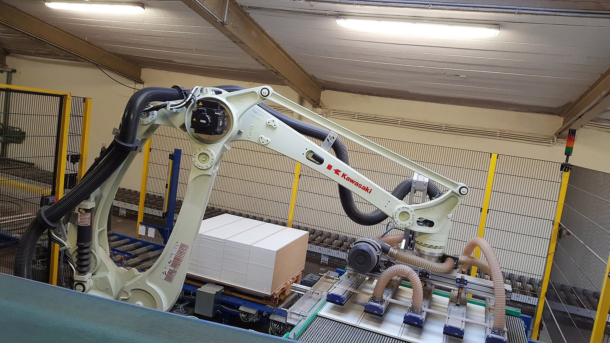

Introduction to Fluid Power
How can we use pressure to produce, control, and safely apply motion in an automated machine?
What Is Fluid Power?
Fluid power uses a fluid under pressure to carry force and energy from one place to another. At the end of the line, an actuator turns that pressure into motion.
Pneumatics
Pneumatic systems use a gas, almost always compressed air. A compressor squeezes the air, and a tank stores it until a valve lets it into an actuator.
Hydraulics
Hydraulic systems use a liquid, usually oil. A pump pushes the liquid through hoses to a cylinder or motor, and the same fluid circulates through the system again and again.
Air and oil both count as fluids because both flow and take the shape of their container. The big difference between them shows up when you try to squeeze them.
Air or Liquid?
Predict whether each machine is pneumatic or hydraulic, and be ready to explain your clue.

The Jackhammer
A thick hose runs from the jackhammer to a loud machine on a trailer.

The Excavator Arm
Metal rods slide in and out of cylinders on the arm, which can hold a heavy bucket perfectly still.
Photos: Josh Parris, public domain; Rami Tarawneh, CC BY 2.5, both via Wikimedia Commons.
Today’s Reading
Half the class reads about each system. You will become the expert on your system and write a summary of it. Then you will trade summaries with someone who read about the other system.
Article A: Pneumatics
“Pneumatics: A Simple Introduction”
Chris Woodford, Explain that Stuff
Article B: Hydraulics
“How Hydraulics Works”
Chris Woodford, Explain that Stuff
Preview the Text
Before you read closely, skim the whole article. Look at the title, the subheadings, the photo captions, and any words in bold or italics.
Read and Annotate
Read the article once just to understand it. On your second read, mark it up with these symbols so you can find the important parts again.
Anything that supports the main idea of the article.
Underline anything that is a supporting detail, such as an example or a reason.
Anything that is confusing, and any vocabulary you do not know.
Identify the Gist
The gist is what the article is mostly about, stated in one sentence. It is not a list of facts; it is the big idea that all of those facts support.
Draft Your Summary
Write a summary of 4 to 6 sentences. Your first sentence should name the article’s title, in quotation marks, and its author.
Use 2 or 3 of the sentence starters provided with your article. You may reword a starter so it fits your own sentence.
Check Your Summary
Before you trade, check your own summary against this list and fix anything that is missing.
- Your first sentence includes the article’s title in quotation marks and its author. Highlight the title and author.
- You used 2 or 3 of the sentence starters. Highlight each starter you used.
- Your summary is 4 to 6 sentences long.
Swap with the Same Article
Trade summaries with someone who read the same article as you. Detach the rubric attached to your article and use it to score the summary you were given.
Swap with a Different Article
Get your summary back, then trade with someone who read the other article. Read their summary carefully, because it is your only source for the system you did not read about.
Pneumatic or Hydraulic?
Each machine comes from one of the articles. Drag it into the system it uses, or click it and then click a bin.
What Happens When You Squeeze?
Most differences between the two systems come from one property: how much the fluid shrinks when you squeeze it. Scientists call this compressibility.
Air Squeezes
A gas shrinks into a smaller space and stores energy like a spring. That makes pneumatic motion soft and springy, which is good for cushioning but makes an exact stopping point hard to hold.
Liquid Barely Squeezes
A liquid hardly shrinks at all, so it pushes back almost like a solid rod. That makes hydraulic motion firm and precise, which is how an excavator holds a heavy bucket perfectly still.
Pneumatics and Hydraulics Side by Side
| Pneumatic | Hydraulic | |
|---|---|---|
| Force | It gives medium force, using air at about 100 psi. | It gives very large force, at many times that pressure. |
| Speed | It is fast, because air moves and vents quickly. | It is slower, but its motion is smooth and steady. |
| Precision | Air squeezes under a load, so exact positions are hard to hold. | Oil barely squeezes, so the actuator holds its position under a load. |
| Used fluid | Used air is exhausted to the room, which is noisy. | Oil returns to a reservoir and is reused, which also lubricates parts. |
| Hazards | It has no flammable fluid, so it suits explosive places like mines. | Oil leaks are slippery and the oil can burn. |
Why Not Just Use an Electric Motor?
Quick to Start and Stop
A motor’s heavy spinning parts resist changes in speed. A fluid actuator has little momentum, so it can start, stop and reverse quickly.
Power from a Distance
The compressor or pump can sit far away, so the tool at the end of the hose stays small and light, like a dentist’s drill.
No Sparks at the Work
No electricity reaches the point where the work happens, so fluid power is safer where a spark could start a fire.
A Gentle Grip
Springy air lets suction cups and grippers hold delicate objects softly, which is why many factory robots use them.
Fluid Power on a Factory Robot

Photo: De Man Automation + Service, CC BY-SA 4.0, via Wikimedia Commons.
This robot stacks furniture panels onto pallets. Electric motors swing its arm into position, because motors are good at precise, programmable movement.
At the end of the arm, a gripper fed by large air hoses picks up each panel. Engineers often pair motors and fluid power this way, letting each one do the job it does best.
Your final project uses the same idea: a pneumatic actuator doing one job on an assembly line.
Quick Check
1. Why can a hydraulic machine usually hold a position more precisely than a pneumatic machine?
2. Why does a pneumatic system store compressed air in a tank (reservoir)?
Before You Go
1. Pneumatics: name one advantage, one limitation, and one job it suits well.
2. Hydraulics: name one advantage, one limitation, and one job it suits well.